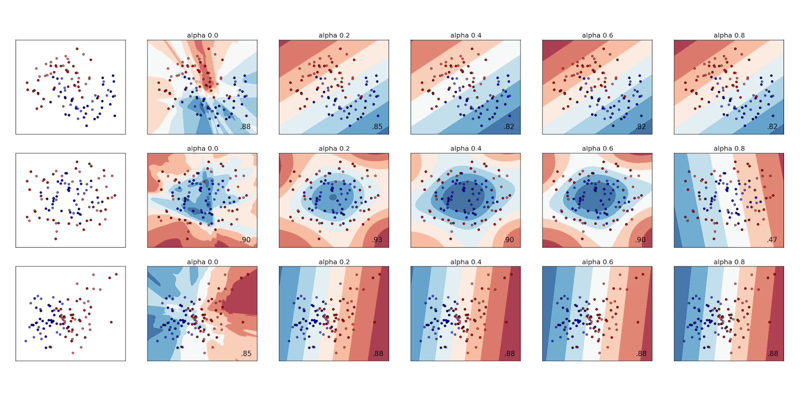
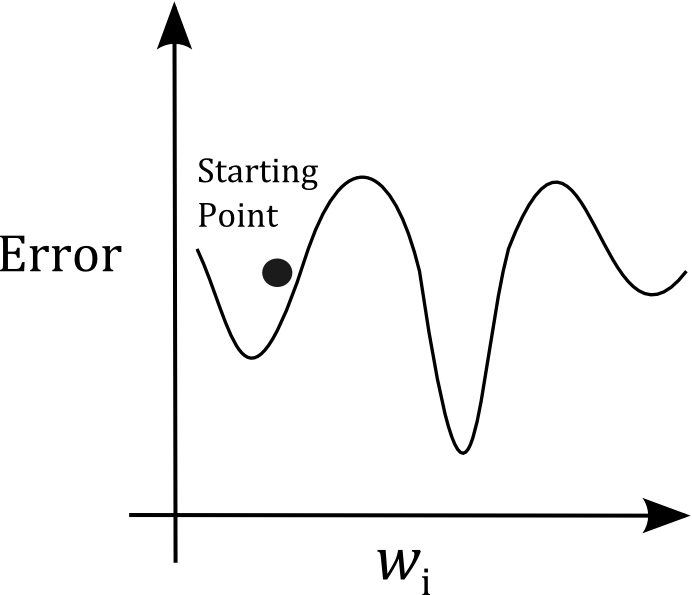
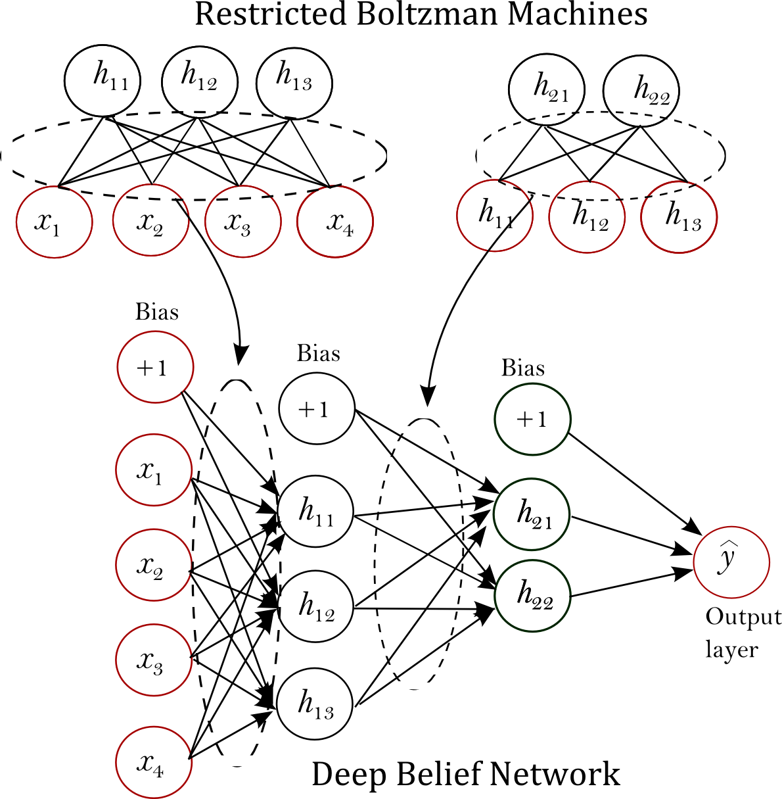

Mid-term Summary - Extending Neural Networks Module for scikit-learn
The objective is to implement neural network algorithms in a clean, well-tested code using the scikit-learn API. The algorithms are meant to be user-friendly and easy to edit and scale for those who wish to extend, or debug them if necessary.
Since the start of GSoC 2014 until now, I completed two modules, multi-layer perceptron (mlp) #3204 and mlp with pre-training #3281, which are pending final review for merging. I also implemented the extreme learning machine (elm) algorithm #3306 which hasn't been reviewed yet and more components such as test files, examples, and documentations are required. However, I am confident that I will complete it by the deadline I set in the proposal.
In the following three sections, I will explain the modules in more detail.
1) Multi-layer perceptron #3204 Multi-layer perceptron (MLP) supports more than one hidden layer allowing it to construct highly non-linear functions. Figure 1 displays an MLP with 1 hidden layer.

To define the number of hidden layers and their neurons, one can simply run the following statement.
The list '[150, 100]' means that two hidden layers are constructed with 150 and 100, neurons respectively.
Further, MLP can be used for reinforcement learning where each time step makes a new training sample. It can use the partial_fit method to update its weights on per sample basis in real-time (stochastic update).
MLP also consists of a regularization term alpha as part of its parameters, whose value determines the degree of non-linearity the function is meant to have. Therefore, if the algorithm is overfitting, it is desirable to increase alpha to have a more linear function. Figure 2 demonstrates the decision boundaries learnt by mlp with different alpha values.

Figure 2 shows that the higher the value of alpha, the less curves the decision boundary will have.
The implementation has passed through various test cases to prevent unexpected behavior. One of the test cases involves comparing between the algorithm's analytic computation of the gradient and its numerical computation. Since the difference between the values was found to be at most a very small value means the backpropagation algorithm is working as expected.
2) MLP with pre-training #3281
One issue with MLP is that it involves random weights' initialization. The weights could land in a poor position in the optimization (see Figure 3) whose final solutions are not as good as they could be.

Pre-training is one scheme to have the initial weights land in a better start. Restricted boltzmann machines (RBMs) can find such initial weights. Figure 4 shows the process of pre-training.

For each layer in the network, there is an RBM that trains on the inputs given for that layer. The final weights of the RBM are given as the initial weights of the corresponding layer in the network.
Running an example of pre-training has showed that RBMs can improve the final performance. For instance, on the digits the dataset, the following results were obtained.
1) Testing accuracy of mlp without pretraining: 0.964 2) Testing accuracy of mlp with pretraining: 0.978
3) Extreme learning machine (elm) #3306
Much of the criticism towards MLP is in its long training time. MLP uses the slow gradient descent to updates its weights iteratively, involving many demanding computations.
Extreme learning machines (ELMs) [1], on the other hand, can train single hidden layer feedforward networks (SLFNs) using least square solutions instead of gradient descent. This scheme requires only few matrix operations, making it much faster than gradient descent. It also has a strong generalization power since it uses least-squares to find its solutions.
The algorithm has been implemented and it passed the travis tests. But it still awaits more thorough review and test files to anticipate errors.
I believe I will finalize the module by 29 June as per the proposal.
Remaining work
In the remaining weeks my tasks are broken down as follows.
Week 7, 8 (June 30 - July 13)
I will implement and revise regularized ELMs [3] and weighted ELMs [4], and extend the ELMs documentation.
Week 9, 10 (July 14- July 27)
I will implement and revise Sequential ELMs [2], and extend the ELMs documentation.
Week 11, 12 (July 28- August 10)
I will implement and revise Kernel-Based ELMs, and extend the ELMs documentation.
Week 13 - Wrap-up
Acknowledgements
I would like to thank my mentors and reviewers including @ogrisel, @larsmans @jnothman, @kasternkyle, @AlexanderFabisch for dedicating their time in providing useful feedback and comments, making sure the work meets high-quality standards. I sincerely appreciate the time PSF admins take to oversee the contributers as it encourages us to set a higher bar for quality work. I would also like to thank GSoC 2014, as this wouldn't have been possible if it hadn't been for their support and motivation.
References
[1] http://www.di.unito.it/~cancelli/retineu11_12/ELM-NC-2006.pdf
[2] http://www.ntu.edu.sg/home/egbhuang/pdf/OS-ELM-TNN.pdf
[3] http://www.ntu.edu.sg/home/egbhuang/pdf/ELM-Unified-Learning.pdf
[4] Zong, Weiwei, Guang-Bin Huang, and Yiqiang Chen. "Weighted extreme learning machine for imbalance learning." Neurocomputing 101 (2013): 229-242.
comments powered by Disqus